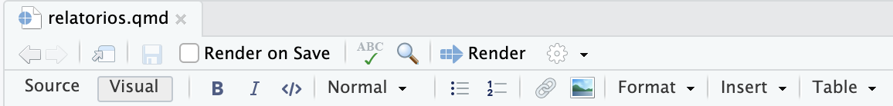

# Aula sobre ggplot2 -----
# Carregar pacotes
library(ggplot2)
library(palmerpenguins)
# Código que gera o gráfico
penguins |>
ggplot() +
aes(x = flipper_length_mm, y = body_mass_g) +
geom_point(aes(color = species, shape = species)) +
scale_color_manual(values = c("darkorange", "darkorchid", "cyan4")) +
theme_minimal()
# ....5 Produção de relatórios com Quarto
5.1 Introdução
No curso Introdução à análise de dados no R, utilizamos arquivos .R para escrever os códigos em R. Em scripts .R, todo o conteúdo é interpretado como código em R, exceto o que estava precedido de # (utilizado para comentários).
Por exemplo:
Essa forma de trabalhar é ótima para criar scripts de análise de dados, mas não é a melhor forma de criar relatórios que combinam texto, código e resultados.
5.2 Literate programming
O conceito de literate programming, ou programação letrada1, foi criado por Donald Knuth na década de 80. Esse conceito propõe a escrita de códigos intercalados com texto explicativo, de forma que o fluxo de raciocínio fique claro para leitores e colaboradores. A ideia central é que o código seja parte da comunicação, tornando o relatório um documento legível tanto para computadores quanto para humanos.
Com base nesse conceito, surgiram ferramentas que tornam possível criar relatórios reprodutíveis que combinam texto, código e resultados, como o R Markdown e, mais recentemente, o Quarto.
5.3 R Markdown

O R Markdown é um pacote em R que possibilita criar arquivos com códigos em R, resultados dos códigos, e textos explicativos. Esses arquivos tem extensão .Rmd.
Lançado em 20152, ele rapidamente se tornou uma das ferramentas mais populares para a criação de relatórios dinâmicos e reprodutíveis na comunidade R.
O R Markdown possibilita exportar os arquivos em diversos formatos, como HTML, PDF, Word, apresentações, entre outros.
5.4 Quarto

Como citado anteriormente, o R Markdown é uma ferramenta muito boa para escrita técnica e científica reprodutível, mas, por ser um pacote em R, o seu uso acaba ficando limitado às pessoas que usam R.
Em 2022, a Posit (anteriormente chamada de RStudio) (mesma empresa responsável pelo RMarkdown) lançou o Quarto, uma nova ferramenta que permite a criação de documentos dinâmicos e reprodutíveis.
O Quarto é um sistema de escrita técnica e científica, de código aberto. Ele é uma evolução do R Markdown, mas não depende do R para funcionar. Isso significa que você pode usar o Quarto para escrever documentos com códigos em Python, R, Julia, Observable, entre outras linguagens, e exportar para diversos formatos, como PDF, HTML, Word, entre outros. Por exemplo: Você pode usar o VSCode como IDE, escrever um documento com código em Python e gerar o documento final. Tudo isso sem precisar ter o R e/ou RStudio instalados.

Nota
O Quarto foi lançado em 2022, e apresenta melhorias em relação ao R Markdown.
Nesta aula, vamos focar no Quarto, mas caso queira utilizar o RMarkdown, os principais conceitos são os mesmos.
5.4.1 Instalação do Quarto
Como dito anteriormente, o Quarto não é um pacote em R como o RMarkdown, e sim um software que podemos instalar em nosso computador.
Quando instalamos as versões mais recentes do RStudio IDE, o Quarto já vem instalado. Caso você não tenha o RStudio instalado, você pode instalar o Quarto de forma independente.
Para instalar ou atualizar o Quarto, acesse a página de instalação, faça o download do instalador referente ao seu sistema operacional (Windows, Mac OS, Linux) e faça a instalação.
5.4.1.1 Exercício
- Verifique se o Quarto está instalado no seu computador. Para isso, abra o RStudio e verifique se o botão “New File” apresenta a opção “Quarto Document”.
5.4.2 Criar um novo documento Quarto (.qmd)
Os arquivos Quarto tem extensão .qmd, e podem ser criados no RStudio clicando no botão “New File” e selecionando “Quarto Document”.
Em seguida, o RStudio apresentará uma janela chamada “New Quarto Document” com algumas opções para criar um novo arquivo. Essas opções são passíveis de alteração posteriormente, então não precisamos nos preocupar muito com elas agora. Em resumo:
- Title: Título do documento
- Author: Nome de quem está criando o documento
- Format: Formato do documento (HTML, PDF, Word). Vamos manter em HTML.
- Engine: Knitr ou Jupyter. Vamos manter em Knitr.
- Editor: Caixa para selecionar o editor visual. Por enquanto, vamos deixar desmarcado.
Para criar o documento, clique em “Create”:

O RStudio criará um arquivo .qmd com uma estrutura inicial:
5.4.2.1 Exercício
- Crie um arquivo com Quarto básico, adicionando o título “Meu primeiro relatório”, e no campo de autoria adicionando o seu nome. Mantenha selecionada a opção para exportar um arquivo HTML. Salve o arquivo como
"aula-2.qmd"na pasta do projeto do curso, em"relatorios/".
5.4.3 Renderizar o arquivo
Podemos clicar no botão Render para que o arquivo seja renderizado (ou seja, o código fonte será transformado em um arquivo final HTML/Word/PDF/etc). É necessário salvar o arquivo antes de renderizar.
Na imagem a seguir, temos um exemplo de um arquivo em sua versão .qmd e a versão renderizada em HTML. Observe que o botão render foi destacado em vermelho, e que o arquivo renderizado foi aberto no painel Viewer do RStudio.
Caso você clique em render e não aconteça nada, você pode:
- Verificar se o RStudio está configurado para mostrar a versão preliminar (Preview) do documento no painel Viewer, clicando na engrenagem ao lado do botão Render e selecionando a opção “Preview in Viewer Pane”:
- Verificar se o arquivo foi salvo na pasta do projeto.
Nos próximos tópicos, vamos explorar a estrutura de um arquivo Quarto e como adicionar conteúdos a ele.
5.4.3.1 Exercício
- Renderize o arquivo
"aula-2.qmd"que você criou anteriormente. Verifique se o arquivo foi renderizado corretamente, se você consegue visualizar o conteúdo no painel Viewer do RStudio, e se o arquivo foi salvo na pasta do projeto.
5.4.4 Estrutura de um arquivo Quarto
Os arquivos Quarto tem extensão .qmd, e são divididos em três partes:
Metadados: Informações sobre o documento, como título, autor, formato, data, editor, entre outros. Essa parte é delimitada por
---no início e no final. É escrita em formatoyaml, com a estruturachave: valor. Nos metadados, a indentação (espaços entre o início da linha e o início do texto) é importante para o correto funcionamento do documento.Campos de código (code chunks): Trechos de código (em R ou outra linguagem) que podem ser executados e exibidos no documento. Os campos de código podem ser criados utilizando a marcação
```{r}no início e```no final, ou utilizando o botão de criar novo chunk: .Textos com marcação em Markdown: Textos explicativos, títulos, listas, tabelas, imagens, links, entre outros. A marcação é feita em Markdown, uma linguagem de marcação simples.
O que é Markdown?
Markdown é uma linguagem de marcação simples que permite escrever textos com formatação básica, como títulos, listas, links, imagens, entre outros. A ideia é que o texto seja legível mesmo sem a formatação, e que a marcação seja simples e intuitiva.
O arquivo abaixo é um exemplo de um arquivo Quarto:
---
title: "Título do documento"
format: html
---
# Título 1
Este é um texto de exemplo.
```{r}
# este é um campo de código em R
1 + 1
``` - 1
- Metadados
- 2
- Texto com marcação em Markdown
- 3
- Campo de código
5.4.4.1 Exercício
- Vamos começar a adicionar um pouco de conteúdo no arquivo
"aula-2.qmd"criado anteriormente. Adicione:
Um campo de código, onde o pacote tidyverse seja carregado.
Um campo de código, com o código para criar um gráfico simples com o pacote
ggplot2. Caso você não tenha um código em mente, você pode utilizar o código abaixo:
library(palmerpenguins)
penguins |>
ggplot() +
aes(x = flipper_length_mm, y = body_mass_g) +
geom_point(aes(color = species, shape = species)) +
scale_color_manual(values = c("darkorange", "darkorchid", "cyan4")) +
theme_minimal()- Um parágrafo simples de texto, descrevendo o que foi feito.
- Salve o arquivo e renderize-o. Verifique se o conteúdo foi renderizado corretamente.
Atenção: Dicas importantes sobre os campos de código
Os campos de código são executados na ordem em que aparecem no documento. Se você tentar executar um campo de código que depende de um objeto que ainda não foi criado, um erro será gerado.
O documento Quarto deve ser independente dos objetos que estão carregados no painel Environment do RStudio, e dos pacotes que você carregou na sua sessão do R. Todos os pacotes e objetos que você precisa devem ser carregados no próprio documento.
Por padrão, o conteúdo do campo de código é executado toda vez que o documento é renderizado. Se você não quer que o código seja executado, você pode adicionar a opção
eval: falseno campo de código (falaremos mais sobre as opções de campos de código posteriormente).Cuidado com o que você adiciona no campo de código! Por exemplo: não adicione o comando
install.packages()no campo de código, pois isso pode instalar pacotes toda vez que o documento for renderizado. Se você precisa instalar pacotes, faça isso no console do RStudio. Caso queira deixar isso registrado no campo de código, você pode: 1) adicionar como comentário (# install.packages("nome-do-pacote")), ou 2) adicionar a opçãoeval: falseno campo de código.
5.4.5 Editor Source e Visual
Ao utilizar documentos Quarto, podemos escolher entre dois modos de edição: Source (código fonte) e Visual.
Editor Source: Modo de edição de código, onde podemos ver e editar o código fonte do documento. É o modo padrão.
Editor Visual: Modo de edição visual, onde podemos ver uma prévia do documento como um todo, com o texto formatado e uma barra de ferramentas. É importante perceber que quando alteramos o documento no editor visual, o código fonte é atualizado automaticamente. Saiba mais sobre o Editor Visual.

A seguir, temos um exemplo de um documento Quarto no modo Source e Visual:

Para alterar entre os modos de edição, escolha a opção desejada nos botões no canto superior direito do documento:

O editor Visual tem várias opções para facilitar a formação do texto com Markdown e inserir outros tipos de conteúdo (como por exemplo: notas de rodapé, citações, imagens, links, tabelas simples, expressões matemáticas com LaTeX, entre outros):
Caso queira que o RStudio sempre abra o documento no editor de preferência, você pode adicionar essa informação nos metadados do documento, utilizando editor: seguido de source ou visual. Por exemplo:
---
editor: source
------
editor: visual
---5.4.5.1 Exercício
Explore as opções do editor Visual, adicionando um pouco de formatação ao texto do arquivo
"aula-2.qmd". Tente adicionar pelo menos um título, uma lista, e um link.Altere entre os modos Source e Visual. Veja a diferença entre o código fonte e a visualização do documento.
Entre os modos Source e Visual, qual você prefere para escrever documentos? Por quê?
5.4.6 Opções de campos de código (chunk options)
Os campos de código, ou code chunks, são trechos de código que podem ser executados em documentos Quarto. Eles oferecem diversas opções para personalizar a execução e a exibição do código e dos resultados. Essas opções permitem configurar como o código aparece no relatório, como ele é executado e como os resultados são apresentados.
As opções devem ser apresentadas na linha após o início do campo de código, precedido de #|, no formato nome_opcao: valor. Por exemplo:
```{{r}}
#| nome_opcao: valor
# código em R aqui
1 + 1
```Existem muitas opções de campos de código, e estão listadas na documentação do Quarto. Neste momento, vamos explorar algumas das principais opções!
5.4.6.1 Exibir ou ocultar o código
A opção echo: define se o código será exibido (ou não) no relatório. Por padrão, o código é exibido. Para ocultar o código, podemos adicionar echo: false no campo de código.
5.4.6.2 Executar ou não o código
A opção eval: define se o código será executado (ou não) no relatório. Por padrão, o código é executado. Para não executar o código, podemos adicionar eval: false no campo de código.
5.4.6.3 Mensagens (message) e avisos (warning)
Ao executar um campo de código, mensagens e avisos podem ser gerados. Podemos controlar se essas mensagens e avisos serão exibidos no relatório com as opções message: e warning:. Por padrão, ambos são exibidos. Para ocultar as mensagens, podemos adicionar message: false no campo de código. Para ocultar os avisos, podemos adicionar warning: false.
5.4.6.4 Nome do campo de código (label)
Podemos adicionar um nome ao campo de código, utilizando a opção label: nome-do-campo. Atencão:
É importante que cada campo de código nomeado tenha um nome único! Não podemos repetir os nomes.
Deixe o nome do campo de código sem caracteres especiais, sem espaços, e sem
_. Caso queira separar palavras, utilize o-.
É interessante nomear os campos de código, pois:
É necessário para fazer referências cruzadas (neste caso, precisamos utilizar os prefixos, como
fig-para figuras, etbl-para tabelas).Facilita a identificação dos campos de código, principalmente em documentos maiores (ao abrir o arquivo
.qmd, existe um meno no canto inferior esquerdo do RStudio onde podemos navegar pelo documento utilizando os nomes dos campos de código e os títulos e subtítulos).Caso ocorram erros, é mais fácil identificar o campo de código que gerou o erro, pois a mensagem apresentada indicará o nome do campo de código.
As imagens geradas a partir de campos de código nomeados são salvas com o nome do campo de código. Isso facilita a identificação das imagens geradas na pasta do projeto.
5.4.6.5 Alterando a configuração global dos campos de código
Podemos alterar a configuração global dos campos de código no documento, adicionando as opções no início do documento, nos metadados. Por exemplo:
---
execute:
message: false
warning: false
echo: false
---- 1
-
A opção
message: falseoculta as mensagens. - 2
-
A opção
warning: falseoculta os avisos. - 3
-
A opção
echo: falseoculta o código.
Isso fará com que todos os campos de código do documento tenham essas opções por padrão. Caso você queira alterar as opções de um campo de código específico, você pode adicionar as opções no campo de código específico.
5.4.7 Caminhos em documentos Quarto
Quando trabalhamos em scripts .R e utilizando projetos do RStudio, os caminhos relativos são compostos partindo da pasta raíz do projeto.
Por exemplo: dados/sidrar_4092_bruto.xlsx significa que o arquivo sidrar_4092_bruto.xlsx está na pasta dados, que está na raíz do projeto.
.
├── dados/
│ └── sidrar_4092_bruto.xlsx
├── projeto.Rproj
├── relatorios/
│ └── exemplo.qmd
Nos documentos Quarto, os caminhos relativos são compostos partindo da pasta onde o arquivo .qmd está salvo. Por exemplo: se o arquivo .qmd está salvo na pasta relatorios, e queremos adicionar a base de dados que está na pasta dados, o caminho relativo seria ../dados/sidrar_4092_bruto.xlsx. Os dois pontos ../ significam “subir um nível” na estrutura de pastas.
Uma forma mais robusta de trabalhar com os caminhos é utilizando a função here::here(), que compõe o caminho absoluto, partindo da pasta inicial do projeto. Por exemplo: here::here("dados/sidrar_4092_bruto.xlsx") significa que o arquivo sidrar_4092_bruto.xlsx está na pasta dados, que está na raíz do projeto.
here::here("dados/sidrar_4092_bruto.xlsx")[1] "/home/runner/work/curso_r_intermediario_202501/curso_r_intermediario_202501/dados/sidrar_4092_bruto.xlsx"Em resumo, podemos “envelopar” os caminhos relativos com a função here::here(), para garantir que o caminho seja composto corretamente, independente de onde o arquivo .qmd está salvo.
5.4.8 Adicionando conteúdos com código
Nota
Existem vários tipos de conteúdo que podem ser adicionados a um documento Quarto, como texto, código, gráficos, tabelas, imagens, links, entre outros.
O melhor lugar para aprender sobre esses conteúdos é a documentação do Quarto, que é muito completa e bem organizada.
Vamos explorar alguns tipos de conteúdos que podem ser adicionados a um documento Quarto que sejam resultados de códigos em R.
Como citado anteriormente, podemos adicionar código em R em campos de código, ou code chunks. Dentro de um campo de código, podemos adicionar comentários, códigos em R, e os resultados dos códigos serão exibidos logo em seguida no documento.
Para adicionar um campo de código, utilizamos a marcação ```{r} no início e ``` no final. Por exemplo:
```{r}
# Exemplo: somando 1 + 1
1 + 1
```[1] 2A partir de agora, vamos omitir a marcação de iniciar e finalizar os campos de código, porém saiba que é necessário adicionar essas marcações para que o código seja executado. Por exemplo, o código acima seria apresentado desta forma:
# Exemplo: somando 1 + 1
1 + 1[1] 25.4.8.1 Adicionando gráficos
Para adicionar um gráfico, podemos criar um campo de código e adicionar o código que gera o gráfico (igual ao utilizando em scripts .R).
Os gráficos gerados a partir de um campo de código são exibidos logo após o código.
Por exemplo:
# Carregar os pacotes
library(tidyverse)
library(palmerpenguins)
# exemplo de código
penguins |>
ggplot() +
aes(x = flipper_length_mm, y = body_mass_g) +
geom_point(aes(color = species, shape = species)) +
scale_color_manual(values = c("darkorange", "darkorchid", "cyan4")) +
labs(
x = "Comprimento da nadadeira (mm)",
y = "Massa corporal (g)",
color = "Espécie",
shape = "Espécie",
title = "Relação entre comprimento da nadadeira e massa corporal",
subtitle = "Pinguins das espécies Adelie, Chinstrap e Gentoo",
caption = "Fonte: Pacote palmerpenguins."
) +
theme_minimal()5.4.8.2 Adicionando tabelas
Para adicionar tabelas (que sejam geradas com código), não basta apenas adicionar o código que gera a tabela. Veja o que acontece se tentarmos adicionar uma tabela com o código abaixo:
pinguins_frequencia <- penguins |>
count(species, island, sort = TRUE)
pinguins_frequencia# A tibble: 5 × 3
species island n
<fct> <fct> <int>
1 Gentoo Biscoe 124
2 Chinstrap Dream 68
3 Adelie Dream 56
4 Adelie Torgersen 52
5 Adelie Biscoe 44Observe que o resultado que apareceu no relatório é igual ao que apareceria no console do R.
Para que a tabela seja exibida de forma mais amigável, podemos utilizar alguma função de tabela para gerar tabelas. Existem diversas funções (de diferentes pacotes em R) que possibilitam a criação de tabelas. A função knitr::kable() é muito utilizada, e permite criar tabelas simples a partir de um data frame.
Por exemplo, podemos utilizar o knitr::kable() para exibir a tabela criada:
pinguins_frequencia |>
knitr::kable()| species | island | n |
|---|---|---|
| Gentoo | Biscoe | 124 |
| Chinstrap | Dream | 68 |
| Adelie | Dream | 56 |
| Adelie | Torgersen | 52 |
| Adelie | Biscoe | 44 |
Podemos explorar os argumentos da função para personalizar a tabela, como adicionar nomes de colunas, entre outros. Por exemplo:
pinguins_frequencia |>
knitr::kable(col.names = c("Espécie", "Ilha", "Quantidade"))| Espécie | Ilha | Quantidade |
|---|---|---|
| Gentoo | Biscoe | 124 |
| Chinstrap | Dream | 68 |
| Adelie | Dream | 56 |
| Adelie | Torgersen | 52 |
| Adelie | Biscoe | 44 |
Dica
Além da função knitr::kable(), existem outras funções que podem ser utilizadas para criar tabelas. Abaixo listamos alguns pacotes que possuem funções para criar tabelas, e podem ser explorados posteriormente:
kableExtra: este pacote apresenta funções para personalizar tabelas criadas comknitr::kable(), porém o seu funcionamento é focado em tabelas em HTML e PDF (com LaTeX). Se o seu objetivo é gerar documentos em word, não utilize okableExtra.flextable: este pacote é focado em criar tabelas para documentos em Word, e permite maior personalização. Para aprender a utilizar oflextable, consulte a documentação do pacote e o guia de usuário (flextable book).reactable: este pacote é focado em criar tabelas interativas em HTML, e permite adicionar filtros, ordenação, entre outros. Para aprender a utilizar oreactable, consulte a documentação do pacote.gt: este pacote foi criado pela equipe da RStudio/Posit, e tenta utilizar uma filosofia similar aoggplot2(a gramática dos gráficos), porém com tabelas (gtsendo gramática de tabelas). Ogttem funções para as diferentes partes da tabela: cabeçalho, corpo, rodapé, entre outros. Para aprender a utilizar ogt, consulte a documentação do pacote. Curiosidade: em 2023 a mesma equipe lançou a bibliotecagtpara Python.
{kind=link}
5.4.8.2.1 Exercício
No arquivo
"aula-2.qmd", crie um campo de código com uma tabela de frequência de pinguins por espécie e sexo, utilizando a base de dadospenguins. Salve essa tabela de frequência em um objeto chamadopinguins_freq_especie_sexo.Utilizando o objeto criado, apresente essa tabela formatada com a função
knitr::kable().Experimente adicionar outra tabela utilizando alguma função de tabela de outro pacote citado como extra, como
flextable::flextable(),reactable::reactable(), ougt::gt().
5.4.8.3 Adicionar código em linha (inline code)
Até agora, exploramos como adicionar conteúdos com código dentro de um campo de código. Mas e se quisermos adicionar um resultado de um código em um texto?
Não é interessante adicionar manualmente conteúdos que podem ser gerados com código, pois isso pode tornar o documento menos reprodutível. Principalmente se os dados podem ser atualizados com o tempo!
Para adicionar um resultado de um código em um texto, podemos utilizar o que chamamos de código em linha, ou inline code. Para isso, utilizamos a seguinte sintaxe:
Por exemplo, o texto abaixo apresenta conteúdos feitos com campos de código:
A base de dados
penguinsapresenta pinguins de três espécies: Adelie, Gentoo, Chinstrap. A base possui 344 observações e 8 (sendo que cada observação corresponde a um pinguim) variáveis: species, island, bill_length_mm, bill_depth_mm, flipper_length_mm, body_mass_g, sex, year. A coleta de dados foi feita em três ilhas: Torgersen, Biscoe, Dream, entre os anos de 2007 e 2009.
Você consegue identificar onde foram utilizados os códigos em linha?
Clique para ver a resposta!
Os conteúdos em destaque foram feitos com códigos em linha:
A base de dados
penguinsapresenta pinguins de três espécies: Adelie, Gentoo, Chinstrap. A base possui 344 observações e 8 (sendo que cada observação corresponde a um pinguim) variáveis: species, island, bill_length_mm, bill_depth_mm, flipper_length_mm, body_mass_g, sex, year. A coleta de dados foi feita em três ilhas: Torgersen, Biscoe, Dream, entre os anos de 2007 e 2009.
Clique para ver o código!
Dicas para adicionar conteúdos com código em linha:
Se você vai escrever algo no texto que pode ser gerado com código, experimente utilizar o código em linha.
A base de dados que você está utilizando pode ser atualizada futuramente? Se sim, busque adicionar conteúdos com códigos em linha.
Caso algum conteúdo que você quer adicionar com código de linha dependa de um código “grande” (mais de uma linha), é interessante criar um campo de código, salvar o resultado em um objeto, e utilizar o código em linha para chamar o objeto.
5.4.8.3.1 Exercícios
- Ainda no arquivo
"aula-2.qmd": utilizando a base de dadospnud_mindo pacoteabjData, escreva uma breve descrição da base de dados, utilizando códigos em linha. Ideias de conteúdos: número de observações, número de variáveis, variáveis presentes na base, quais são os anos presentes na base, quais são os municípios com o menor e maior indicador de IDH municipal para o ano mais recente, entre outros.
Caso não conheça o pacote abjData, você pode carregar a base de dados com o código abaixo:
# install.packages("abjData") # executar caso não tenha o abjData instalado
library(abjData)
pnud_min# A tibble: 16,686 × 15
ano muni_id muni_nm uf_sigla regiao_nm idhm idhm_e idhm_l idhm_r espvida
<chr> <chr> <chr> <chr> <chr> <dbl> <dbl> <dbl> <dbl> <dbl>
1 1991 1100015 ALTA FLO… RO Norte 0.329 0.112 0.617 0.516 62.0
2 1991 1100023 ARIQUEMES RO Norte 0.432 0.199 0.684 0.593 66.0
3 1991 1100031 CABIXI RO Norte 0.309 0.108 0.636 0.43 63.2
4 1991 1100049 CACOAL RO Norte 0.407 0.171 0.667 0.593 65.0
5 1991 1100056 CEREJEIR… RO Norte 0.386 0.167 0.629 0.547 62.7
6 1991 1100064 COLORADO… RO Norte 0.376 0.151 0.658 0.536 64.5
7 1991 1100072 CORUMBIA… RO Norte 0.203 0.039 0.572 0.373 59.3
8 1991 1100080 COSTA MA… RO Norte 0.425 0.22 0.629 0.553 62.8
9 1991 1100098 ESPIGÃO … RO Norte 0.388 0.159 0.653 0.561 64.2
10 1991 1100106 GUAJARÁ-… RO Norte 0.468 0.247 0.662 0.625 64.7
# ℹ 16,676 more rows
# ℹ 5 more variables: rdpc <dbl>, gini <dbl>, pop <int>, lat <dbl>, lon <dbl>5.4.9 Tipos de formatos para exportar
O Quarto permite exportar os documentos em diversos formatos, como HTML, PDF, Word, entre outros. Para definir o formato de saída, podemos adicionar um campo format nos metadados do documento. Por exemplo:
- HTML:
---
format: html
---- Word:
---
format: docx
---- PDF (é necessário ter alguma instalação de LaTeX no computador, veja as página de instalações):
---
format: pdf
---Existe um novo formato chamado typst, que também possibilita gerar arquivos PDF:
---
format: typst
---- Apresentação em HTML:
---
format: revealjs
---Essas são as opções de formatos mais utilizadas. Para ver a lista completa, consulte a documentação do Quarto.
5.4.10 Quarto CLI
O Quarto Command Line Interface (CLI - Interface de linha de comando). Ou seja, podemos utilizar o Quarto no terminal, utilizando comandos. Isso é útil para automatizar tarefas, ou para utilizar o Quarto em ambientes que não possuem uma interface gráfica (como o RStudio).
Podemos acessar o terminal no RStudio acessando o painel Terminal (geralmente este painel fica no canto inferior esquerdo do RStudio, como uma aba ao lado do painel Console).
Também podemos acessar o terminal diretamente no computador, utilizando o terminal do sistema operacional (como o terminal do Windows, ou o terminal do Mac OS). Porém, para isso, é necessário acessar o diretório do projeto que estamos trabalhando (utilizando o comando cd- change directory):
cd Documents/IPEA-DATALAB/curso_r_intermediario_202501 Um comando útil para saber quais são as opções disponíveis é o quarto help:
quarto help
Usage: quarto
Version: 1.6.40
Description:
Quarto CLI
Options:
-h, --help - Show this help.
-V, --version - Show the version number for this program.
Commands:
render [input] [args...] - Render files or projects to various document types.
preview [file] [args...] - Render and preview a document or website project.
serve [input] - Serve a Shiny interactive document.
create [type] [commands...] - Create a Quarto project or extension
use <type> [target] - Automate document or project setup tasks.
add <extension> - Add an extension to this folder or project
update [target...] - Updates an extension or global dependency.
remove [target...] - Removes an extension.
convert <input> - Convert documents to alternate representations.
pandoc [args...] - Run the version of Pandoc embedded within Quarto.
typst [args...] - Run the version of Typst embedded within Quarto.
run [script] [args...] - Run a TypeScript, R, Python, or Lua script.
install [target...] - Installs a global dependency (TinyTex or Chromium).
uninstall [tool] - Removes an extension.
tools - Display the status of Quarto installed dependencies
publish [provider] [path] - Publish a document or project to a provider.
check [target] - Verify correct functioning of Quarto installation.
help [command] - Show this help or the help of a sub-command. Também podemos consultar a versão do Quarto com o comando quarto --version:
quarto --version1.6.40Outro comando útil é o quarto render, que renderiza um arquivo .qmd específico:
quarto render arquivo.qmd5.4.10.1 Pacote {quarto} no R
Existe um pacote em R chamado {quarto} que permite utilizar o Quarto no R. Esse pacote possui funções similares às funções do Quarto CLI, e internamente faz chamadas ao Quarto CLI.
Para instalar o pacote {quarto}, podemos utilizar o comando install.packages("quarto").
Para verificar a versão do pacote {quarto}, podemos utilizar a função quarto::quarto_version():
quarto::quarto_version()[1] '1.6.40'Para renderizar um arquivo .qmd com o pacote {quarto}, podemos utilizar a função quarto::quarto_render("caminho_do_arquivo.qmd"). Isso é similar à clicar no botão Render no RStudio.
5.4.11 Projetos do Quarto
Até então, exploramos como criar arquivos simples em Quarto. Mas e se quisermos criar um projeto com múltiplos arquivos .qmd?
Uma opção é explorar os projetos do Quarto. Ao criar um projeto no RStudio (File -> New Project -> New Project), podemos escolher uma das opções de projetos com Quarto:
Ao criar um projeto do RStudio escolhendo um Project type com Quarto (como website, blog, book, manuscript), o RStudio irá disponibilizar uma estrutura de arquivos para que possamos começar a escrever o seu projeto.
Nos projetos tipo Quarto, existe um arquivo chamado _quarto.qml que irá receber as informações básicas de metadados comuns aos arquivos .qmd do projeto.
Para renderizar os arquivos do projeto, podemos utilizar a função quarto::quarto_render(), ou executar no terminal quarto render.
5.4.12 Extensões
O Quarto possui várias extensões que podem ser utilizadas para adicionar funcionalidades ao documento. Muitas dessas extensões foram desenvolvidas por pessoas da comunidade (e não necessariamente a equipe desenvolvedora do Quarto).
Podemos consultar a lista de extensões disponíveis na página de extensões do Quarto.
Para instalar e utilizar uma extensão, precisamos utilizar o Quarto CLI (linha de comando) (com o comando quarto install extension), ou a função quarto::quarto_add_extension().
Na página da documentação de cada extensão, é possível encontrar informações sobre como instalar e utilizar a extensão.
Nota
No RMarkdown, era comum que a comunidade de R criasse novos pacotes para expandir as funcionalidades da ferramenta. No Quarto, as extensões funcionam de forma similar: é a forma com que a comunidade pode contribuir com novas funcionalidades.
5.4.13 Dúvidas da aula
Idioma do documento
- Ao renderizar um documento em HTML, temos alguns elementos em inglês (como
author,date,table of contents, entre outros). É possível esse conteúdo em português?
Podemos usar a seguinte configuração nos metadados:
---
lang: pt
---Caso tenha dúvidas, consulte a página de documentação.
Sumário
- É possível adicionar um sumário no documento Quarto?
Podemos usar a seguinte configuração nos metadados:
---
format:
html:
toc: true
---- 1
-
TOC é a sigla para Table Of Contents, ou seja, sumário. Ao utilizar
toc: true, o sumário será adicionado ao documento.
Existem outras opções disponíveis para personalizar a forma como o sumário aparece. Essas opções estão listadas na página de documentação.
Arquivo autocontido
- Ao gerar um arquivo HTML, o Quarto exporta um arquivo
.htmle junto à ele, algumas pastas com arquivos.css,.js, entre outros. É possível exportar um arquivo HTML que seja autocontido, ou seja, que não dependa de pastas adicionais?
Podemos usar a seguinte configuração nos metadados:
---
format:
html:
embed-resources: true
---- 1
-
embed-resources: truefaz com que o arquivo HTML seja autocontido, ou seja, que não dependa de pastas adicionais.
Atenção: o arquivo autocontido costuma ser maior (ocupar mais espaço do computador) do que um arquivo “padrão” (que depende de arquivos em pastas adicionais).
Caso necessário, consulte a página de documentação.
5.4.14 Links úteis na documentação do Quarto
Curiosidade: o criador do pacote R Markdown, Yihui Xie, fez uma apresentação sobre a história do R Markdown no R-Day Brasil em 2021.↩︎